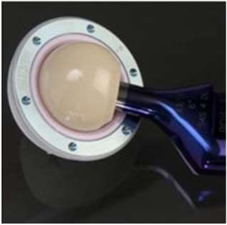
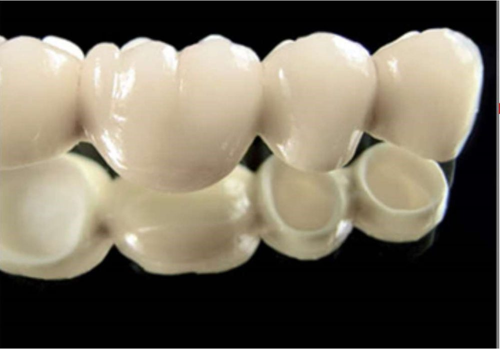

Alumine et zircone
Dans une prothèse totale de hanche, la tête frotte contre l'insert à chaque pas. Les couples céramique ont montré de meilleures performances que le couple métal-polyéthylène. Quelles céramiques, et comment les fabrique-t-on assez solides ?
Intuition
Une prothèse totale de hanche, c'est quatre pièces. Une cupule métallique enfoncée dans le bassin ; un insert posé dans la cupule ; une tête posée sur la tige ; une tige dans le canal du fémur. La tête et l'insert frottent : on veut là des matériaux très durs, lisses, qui ne relarguent rien. L'alumine et la zircone, deux oxydes, cochent ces cases.
Formalisation
Les biocéramiques bio-inertes conservent leurs propriétés physiques et mécaniques tout au long de l'implantation. Elles résistent à la corrosion et à l'usure, et sont très biocompatibles.
L'alumine \(\mathrm{Al_2O_3}\)
- Minerai : la bauxite, roche à forte teneur en alumine et en oxydes de fer.
- L'oxyde d'aluminium pur est monophasique et stable : une seule forme cristallographique.
- L'ASTM recommande, pour les implants, au moins 99,5 % d'alumine pure et moins de 0,1 % de mélange de SiO₂ et d'oxydes alcalins (souvent Na₂O).
- Fabrication par frittage ; technique HIP (Hot Isostatic Pressing) : chauffage entre 1400 et 1500 °C, sous atmosphère neutre, sous forte pression (au moins 1000 bars). Le HIP donne une bonne résistance à la flexion : limite élastique de 580 MPa.
- Grande dureté, faible coefficient de frottement, bonne résistance à l'usure, inertie in vivo : un biomatériau idéal pour les couples de friction des implants articulaires.
- Application la plus populaire : la prothèse totale de hanche (PTH). Les couples alumine-alumine et alumine-UHMWPE (polyéthylène de très haute masse moléculaire) ont montré de meilleures performances que le couple métal (CoCr ou inox)-UHMWPE.
La zircone \(\mathrm{ZrO_2}\) (oxyde de zirconium)
- Structure triphasique : trois mailles cristallines possibles, cubique (propriétés modestes), tétragonale ou quadratique (propriétés satisfaisantes), monoclinique (plus de cohésion des grains, plus dense).
- Obtenue par transformation chimique du zircon \(\mathrm{ZrSiO_4}\), très abondant ; fabrication par frittage.
- Température de fusion très élevée (2953 K) et grande stabilité chimique.
- Ses propriétés sont relativement inférieures à celles de l'alumine. La zircone à haute densité est très biocompatible, très résistante à l'usure, et a un faible coefficient de frottement contre le polyéthylène UHMWPE.
- Usages : résistance à l'usure, aux chocs thermiques, aux hautes températures. En médecine : têtes de prothèses de hanche (pour remplacer les têtes métalliques), implants dentaires et couronnes d'aspect naturel. Exemple : la zircone 3Y-TZP (voir chapitre 4).
Rappel : la structure cristalline d'un matériau décrit l'arrangement ordonné des atomes, ions ou molécules qui se répète périodiquement dans les trois dimensions.


Exemple
Exemple ajouté. Un lot de 2000 g de poudre d'alumine pour têtes de hanche doit contenir au moins \(0{,}995 \times 2000 = 1990\) g d'alumine pure, et moins de \(0{,}001 \times 2000 = 2\) g de SiO₂ et d'oxydes alcalins. La zircone fond à 2953 K, soit \(2953 - 273 = 2680\) °C.
Formules clés
PTH : cupule métallique (bassin), insert (métal, céramique ou polyéthylène), tête (céramique ou métal), tige (canal fémoral).
Alumine : monophasique ; ≥ 99,5 % pure, < 0,1 % de SiO₂ + oxydes alcalins ; HIP à 1400–1500 °C, ≥ 1000 bars, 580 MPa ; couples alumine-alumine et alumine-UHMWPE meilleurs que métal-UHMWPE.
Zircone : cubique, tétragonale, monoclinique ; issue de ZrSiO₄ ; fusion à 2953 K ; un peu moins bonne que l'alumine ; faible frottement contre l'UHMWPE.
\[T(^\circ\mathrm{C}) = T(\mathrm{K}) - 273\]